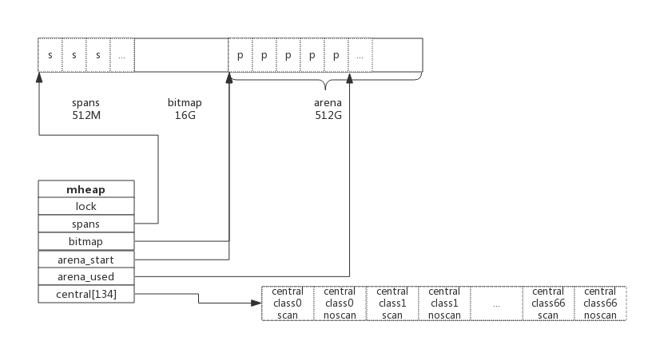

1. 前言
编写过C语言程序的肯定知道通过malloc()方法动态申请内存，其中内存分配器使用的是glibc提供的ptmalloc2。 除了glibc，业界比较出名的内存分配器有Google的tcmalloc和Facebook的jemalloc。二者在避免内存碎片和性能上均比glibc有比较大的优势，在多线程环境中效果更明显。
Golang中也实现了内存分配器，原理与tcmalloc类似，简单的说就是维护一块大的全局内存，每个线程(Golang中为P)维护一块小的私有内存，私有内存不足再从全局申请。
另外，内存分配与GC（垃圾回收）关系密切，所以了解GC前有必要了解内存分配的原理。
2. 基础概念
为了方便自主管理内存，做法便是先向系统申请一块内存，然后将内存切割成小块，通过一定的内存分配算法管理内存。 以64位系统为例，Golang程序启动时会向系统申请的内存如下图所示：

预申请的内存划分为spans、bitmap、arena三部分。其中arena即为所谓的堆区，应用中需要的内存从这里分配。其中spans和bitmap是为了管理arena区而存在的。
arena的大小为512G，为了方便管理把arena区域划分成一个个的page，每个page为8KB,一共有512GB/8KB个页；
spans区域存放span的指针，每个指针对应一个或多个page，所以span区域的大小为(512GB/8KB)*指针大小8byte = 512M
bitmap区域大小也是通过arena计算出来，不过主要用于GC。
2.1 span
span是用于管理arena页的关键数据结构，每个span中包含1个或多个连续页，为了满足小对象分配，span中的一页会划分更小的粒度，而对于大对象比如超过页大小，则通过多页实现。
2.1.1 class
根据对象大小，划分了一系列class，每个class都代表一个固定大小的对象，以及每个span的大小。如下表所示：
// class bytes/obj bytes/span objects waste bytes
// 1 8 8192 1024 0
// 2 16 8192 512 0
// 3 32 8192 256 0
// 4 48 8192 170 32
// 5 64 8192 128 0
// 6 80 8192 102 32
// 7 96 8192 85 32
// 8 112 8192 73 16
// 9 128 8192 64 0
// 10 144 8192 56 128
// 11 160 8192 51 32
// 12 176 8192 46 96
// 13 192 8192 42 128
// 14 208 8192 39 80
// 15 224 8192 36 128
// 16 240 8192 34 32
// 17 256 8192 32 0
// 18 288 8192 28 128
// 19 320 8192 25 192
// 20 352 8192 23 96
// 21 384 8192 21 128
// 22 416 8192 19 288
// 23 448 8192 18 128
// 24 480 8192 17 32
// 25 512 8192 16 0
// 26 576 8192 14 128
// 27 640 8192 12 512
// 28 704 8192 11 448
// 29 768 8192 10 512
// 30 896 8192 9 128
// 31 1024 8192 8 0
// 32 1152 8192 7 128
// 33 1280 8192 6 512
// 34 1408 16384 11 896
// 35 1536 8192 5 512
// 36 1792 16384 9 256
// 37 2048 8192 4 0
// 38 2304 16384 7 256
// 39 2688 8192 3 128
// 40 3072 24576 8 0
// 41 3200 16384 5 384
// 42 3456 24576 7 384
// 43 4096 8192 2 0
// 44 4864 24576 5 256
// 45 5376 16384 3 256
// 46 6144 24576 4 0
// 47 6528 32768 5 128
// 48 6784 40960 6 256
// 49 6912 49152 7 768
// 50 8192 8192 1 0
// 51 9472 57344 6 512
// 52 9728 49152 5 512
// 53 10240 40960 4 0
// 54 10880 32768 3 128
// 55 12288 24576 2 0
// 56 13568 40960 3 256
// 57 14336 57344 4 0
// 58 16384 16384 1 0
// 59 18432 73728 4 0
// 60 19072 57344 3 128
// 61 20480 40960 2 0
// 62 21760 65536 3 256
// 63 24576 24576 1 0
// 64 27264 81920 3 128
// 65 28672 57344 2 0
// 66 32768 32768 1 0
上表中每列含义如下：
- class： class ID，每个span结构中都有一个class ID, 表示该span可处理的对象类型
- bytes/obj：该class代表对象的字节数
- bytes/span：每个span占用堆的字节数，也即页数*页大小
- objects: 每个span可分配的对象个数，也即（bytes/spans）/（bytes/obj）
- waste bytes: 每个span产生的内存碎片，也即（bytes/spans）%（bytes/obj）
上表可见最大的对象是32K大小，超过32K大小的由特殊的class表示，该class ID为0，每个class只包含一个对象。
2.1.2 span数据结构
span是内存管理的基本单位，每个span用于管理特定的class对象，根据对象大小，span将一个或多个页拆分成多个块进行管理。
src/runtime/mheap.go:mspan定义了其数据结构：
type mspan struct {
next *mspan //链表前向指针，用于将span链接起来
prev *mspan //链表前向指针，用于将span链接起来
startAddr uintptr // 起始地址，也即所管理页的地址
npages uintptr // 管理的页数
nelems uintptr // 块个数，也即有多少个块可供分配
allocBits *gcBits //分配位图，每一位代表一个块是否已分配
allocCount uint16 // 已分配块的个数
spanclass spanClass // class表中的class ID
elemsize uintptr // class表中的对象大小，也即块大小
}
以class 10为例，span和管理的内存如下图所示：

spanclass为10，参照class表可得出npages=1,nelems=56,elemsize为144。其中startAddr是在span初始化时就指定了某个页的地址。allocBits指向一个位图，每位代表一个块是否被分配，本例中有两个块已经被分配，其allocCount也为2。
next和prev用于将多个span链接起来，这有利于管理多个span，接下来会进行说明。
2.2 cache
有了管理内存的基本单位span，还要有个数据结构来管理span，这个数据结构叫mcentral，各线程需要内存时从mcentral管理的span中申请内存，为了避免多线程申请内存时不断的加锁，Golang为每个线程分配了span的缓存，这个缓存即是cache。
src/runtime/mcache.go:mcache定义了cache的数据结构：
type mcache struct {
alloc [67*2]*mspan // 按class分组的mspan列表
}
alloc为mspan的指针数组，数组大小为class总数的2倍。数组中每个元素代表了一种class类型的span列表，每种class类型都有两组span列表，第一组列表中所表示的对象中包含了指针，第二组列表中所表示的对象不含有指针，这么做是为了提高GC扫描性能，对于不包含指针的span列表，没必要去扫描。
根据对象是否包含指针，将对象分为noscan和scan两类，其中noscan代表没有指针，而scan则代表有指针，需要GC进行扫描。
mcache和span的对应关系如下图所示：

mcache在初始化时是没有任何span的，在使用过程中会动态地从central中获取并缓存下来，根据使用情况，每种class的span个数也不相同。上图所示，class 0的span数比class1的要多，说明本线程中分配的小对象要多一些。
2.3 central
cache作为线程的私有资源为单个线程服务，而central则是全局资源，为多个线程服务，当某个线程内存不足时会向central申请，当某个线程释放内存时又会回收进central。
src/runtime/mcentral.go:mcentral定义了central数据结构：
type mcentral struct {
lock mutex //互斥锁
spanclass spanClass // span class ID
nonempty mSpanList // non-empty 指还有空闲块的span列表
empty mSpanList // 指没有空闲块的span列表
nmalloc uint64 // 已累计分配的对象个数
}
- lock: 线程间互斥锁，防止多线程读写冲突
- spanclass : 每个mcentral管理着一组有相同class的span列表
- nonempty: 指还有内存可用的span列表
- empty: 指没有内存可用的span列表
- nmalloc: 指累计分配的对象个数
线程从central获取span步骤如下：
- 加锁
- 从nonempty列表获取一个可用span，并将其从链表中删除
- 将取出的span放入empty链表
- 将span返回给线程
- 解锁
- 线程将该span缓存进cache
线程将span归还步骤如下：
- 加锁
- 将span从empty列表删除
- 将span加入noneempty列表
- 解锁
上述线程从central中获取span和归还span只是简单流程，为简单起见，并未对具体细节展开。
2.4 heap
从mcentral数据结构可见，每个mcentral对象只管理特定的class规格的span。事实上每种class都会对应一个mcentral,这个mcentral的集合存放于mheap数据结构中。
src/runtime/mheap.go:mheap定义了heap的数据结构：
type mheap struct {
lock mutex
spans []*mspan
bitmap uintptr //指向bitmap首地址，bitmap是从高地址向低地址增长的
arena_start uintptr //指示arena区首地址
arena_used uintptr //指示arena区已使用地址位置
central [67*2]struct {
mcentral mcentral
pad [sys.CacheLineSize - unsafe.Sizeof(mcentral{})%sys.CacheLineSize]byte
}
}
- lock： 互斥锁
- spans: 指向spans区域，用于映射span和page的关系
- bitmap：bitmap的起始地址
- arena_start: arena区域首地址
- arena_used: 当前arena已使用区域的最大地址
- central: 每种class对应的两个mcentral
从数据结构可见，mheap管理着全部的内存，事实上Golang就是通过一个mheap类型的全局变量进行内存管理的。
mheap内存管理示意图如下：

系统预分配的内存分为spans、bitmap、arean三个区域，通过mheap管理起来。接下来看内存分配过程。
3. 内存分配过程
针对待分配对象的大小不同有不同的分配逻辑：
- (0, 16B) 且不包含指针的对象： Tiny分配
- (0, 16B) 包含指针的对象：正常分配
- [16B, 32KB] : 正常分配
- (32KB, -) : 大对象分配 其中Tiny分配和大对象分配都属于内存管理的优化范畴，这里暂时仅关注一般的分配方法。
以申请size为n的内存为例，分配步骤如下：
- 获取当前线程的私有缓存mcache
- 跟据size计算出适合的class的ID
- 从mcache的alloc[class]链表中查询可用的span
- 如果mcache没有可用的span则从mcentral申请一个新的span加入mcache中
- 如果mcentral中也没有可用的span则从mheap中申请一个新的span加入mcentral
- 从该span中获取到空闲对象地址并返回
4. 总结
Golang内存分配是个相当复杂的过程，其中还掺杂了GC的处理，这里仅仅对其关键数据结构进行了说明，了解其原理而又不至于深陷实现细节。
- Golang程序启动时申请一大块内存，并划分成spans、bitmap、arena区域
- arena区域按页划分成一个个小块
- span管理一个或多个页
- mcentral管理多个span供线程申请使用
- mcache作为线程私有资源，资源来源于mcentral